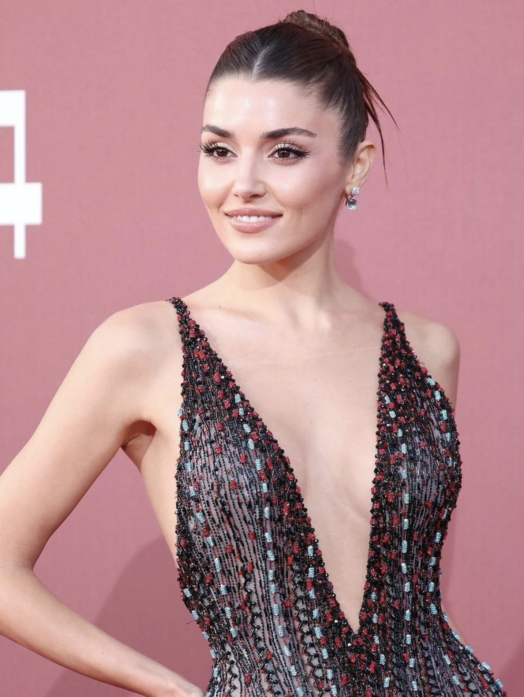

Імʼя: Hande Ercel
Дата народження: 24 листопада 1993
Місце народження: Бандирма, Туреччина
Професія: Актриса та модель
Hande Erсel — популярна турецька актриса та модель, яка стала відомою завдяки ролям у романтичних серіалах. Найбільшу популярність їй приніс серіал «Постукай у мої двері», де вона зіграла Еду Йилдиз. Свою кар’єру Ханде почала як модель і у 2012 році здобула титул на конкурсі краси Miss Civilization of the World. Пізніше вона перейшла в акторство й швидко стала відомою завдяки ролям у серіалах «Дочки Гюнеш», «Любов не розуміє слів» та особливо «Постукай у мої двері», який приніс їй міжнародну популярність. Акторка відома своєю харизмою, природною красою та активністю в соціальних мережах, де за її життям стежать мільйони шанувальників по всьому світу. Окрім зйомок у серіалах, вона співпрацює з відомими брендами як амбасадорка моди та косметики.